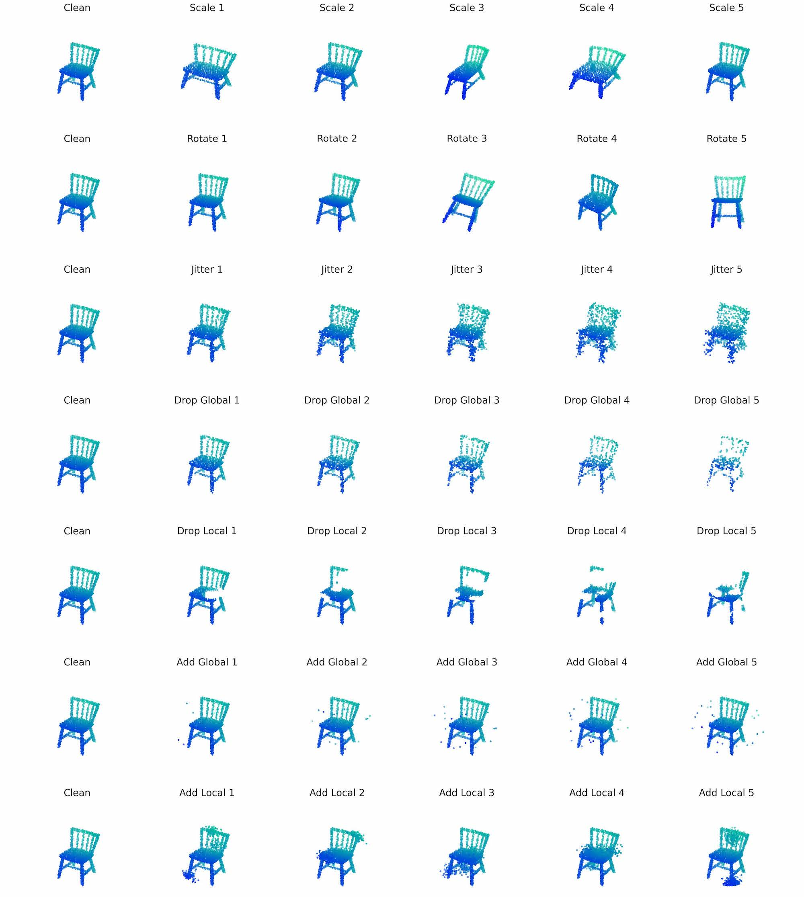
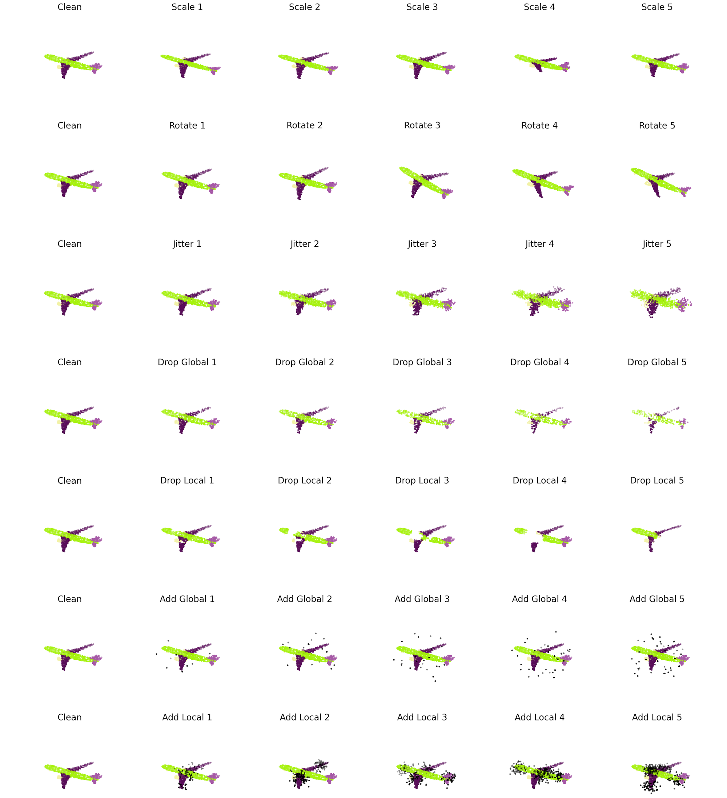

Benchmark Details
Corruption Taxonomy
Corruption Definitions
| Corruptions | Severity Level Settings |
| Jitter | We add a Gaussian noise ϵ ∈ N(0, σ^2) to each of a point’s X, Y and Z coordinates, where σ ∈ {0.01, 0.02, 0.03, 0.04, 0.05} for the five levels |
| Scale | We apply random scaling to the X, Y and Z axis respectively. The scaling coefficient for each axis are independently sampled as s ∼ U(1/S, S), where S ∈ {1.6, 1.7, 1.8, 1.9, 2.0} for the five levels. Point clouds are re-normalized to a unit sphere after scaling. |
| Rotate | We randomly apply a rotation described by an X-Y-Z Euler angle (α, β, γ), where α, β, γ ∼ U(−θ, θ) and θ ∈ {π/30, π/15, π/10, π/7.5, π/6} for the five levels. Note that the sampling method does not guarantee a uniform SO(3) rotation sampling, but sufficient to cover a range of rotation variations. |
| Drop Global | We randomly shuffle all points and drop the last N ∗ ρ points, where N = 1024 is the number of points in the point cloud and ρ ∈ {0.25, 0.375, 0.5, 0.675, 0.75} for all five levels. |
| Drop Local | We drop K points in total, where K ∈ {100, 200, 300, 400, 500} for the five levels. We randomly choose C, the number of local parts to drop, by C ∈ U{1, 8}. We further randomly assign i-th local part a cluster size Ni. Then we repeat the following steps for C times: we randomly select a point as the i-th local center, and drop its Ni-nearest neighbour points (including itself) from the point cloud. |
| Add Global | We uniformly sample K points inside a unit sphere and add them to the point cloud, where K ∈ {10, 20, 30, 40, 50} for the five levels. |
| Add Local | We add K points in total, where K ∈ {100, 200, 300, 400, 500} for the five levels. We randomly shuffle the points, and select the first C ∈ U{1, 8} points as the local centers. We further randomly assign i-th local part a cluster size Ni. Neighbouring point’s X-Y-Z coordinates are generated from a Normal distribution N(μi, σi^2 I), where μi is the i-th local center’s X-Y-Z coordinate and σi ∈ U(0.075, 0.125). We then add each local part to the point cloud one by one. |
Classification

Part Segmentation
